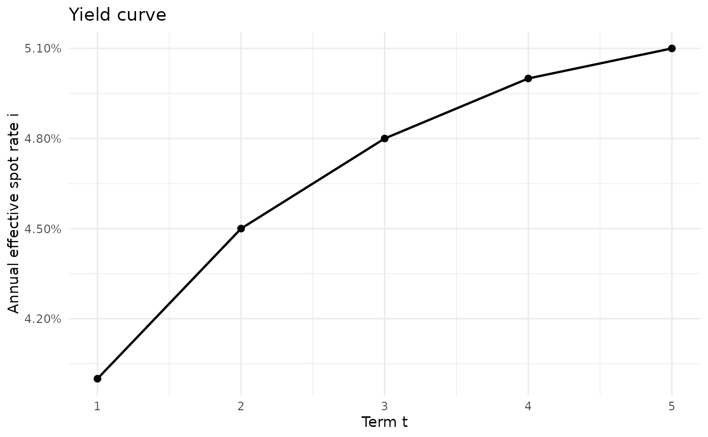
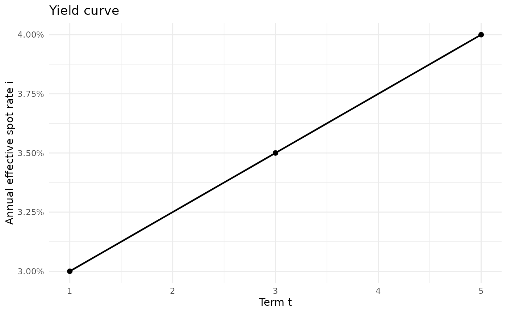

Builds a tibble-first representation of a discrete yield curve and computes the corresponding spot discount factors, using compact actuarial notation.
Arguments
- .data
A data frame or tibble. If
NULL,tandimust be supplied as numeric vectors.- t
Numeric vector of maturities in years when
.data = NULL.- i
Numeric vector of spot-rate values when
.data = NULL.- col_t
Name of the list-column containing maturities.
- col_i
Name of the list-column containing spot rates.
- i_type
Character vector indicating the spot-rate type. Allowed values are
"effective","nominal_interest","nominal_discount", and"force". May have length 1 or the same length as each curve.- m
Positive integer vector giving the conversion frequency for nominal spot rates. May have length 1 or the same length as each curve.
- plot
Logical. If
TRUE, adds a list-column ofggplot2objects.- .out
Name of the output list-column containing discount factors.
- .out_plot
Name of the output list-column containing
ggplot2objects. Used only ifplot = TRUE.- .keep
One of
"all","used", or"none".- .na
Missing-value handling policy:
"propagate","error", or"drop".
Value
A tibble. By default, it returns the original columns plus a new
list-column named by .out containing discount-factor vectors. If
plot = TRUE, it also adds a list-column named by .out_plot
containing ggplot2 objects.
Details
Each row is treated as one curve. For tibble input, col_t and
col_i must identify list-columns of equal-length numeric vectors.
When .data = NULL, t and i must be numeric vectors and
a one-row tibble is returned.
The discount factors are computed as: $$v_t = (1+i_t)^{-t}$$ where \(i_t\) is the annual effective spot rate for maturity \(t\).
If plot = TRUE, the function also returns a list-column of
ggplot2 objects showing the spot yield curve for each row.
This function follows the compact actuarial notation used throughout
tidyactuarial: t denotes maturity, i denotes the spot
rate, i_type denotes the interest-rate type, and m denotes the
conversion frequency for nominal spot rates.
The spot-rate input is converted to annual effective form through
standardize_interest before discount factors are computed.
References
Marcel B. Finan, A Basic Course in the Theory of Interest and Derivatives Markets: A Preparation for the Actuarial Exam FM/2, Section 53: The Term Structure of Interest Rates and Yield Curves.
Kellison, S. G. The Theory of Interest.
Examples
# Simple example
res <- yield_curve(
t = c(1, 2, 3, 4, 5),
i = c(0.040, 0.045, 0.048, 0.050, 0.051),
plot = TRUE
)
res$yield_curve_plot[[1]]

# Multiple curves in a tibble
curves <- tibble::tibble(
curve_id = c("A", "B"),
t = list(c(1, 2, 3), c(1, 3, 5)),
i = list(c(0.04, 0.05, 0.06), c(0.03, 0.035, 0.04))
)
res2 <- yield_curve(
curves,
col_t = "t",
col_i = "i",
plot = TRUE,
.out = "v",
.out_plot = "curve_plot"
)
res2$curve_plot[[2]]

# Nominal annual spot rates convertible semiannually
yield_curve(
t = c(1, 2, 3),
i = c(0.05, 0.055, 0.06),
i_type = "nominal_interest",
m = 2
)
#> # A tibble: 1 × 4
#> t i v i_effective
#> <list> <list> <list> <list>
#> 1 <dbl [3]> <dbl [3]> <dbl [3]> <dbl [3]>